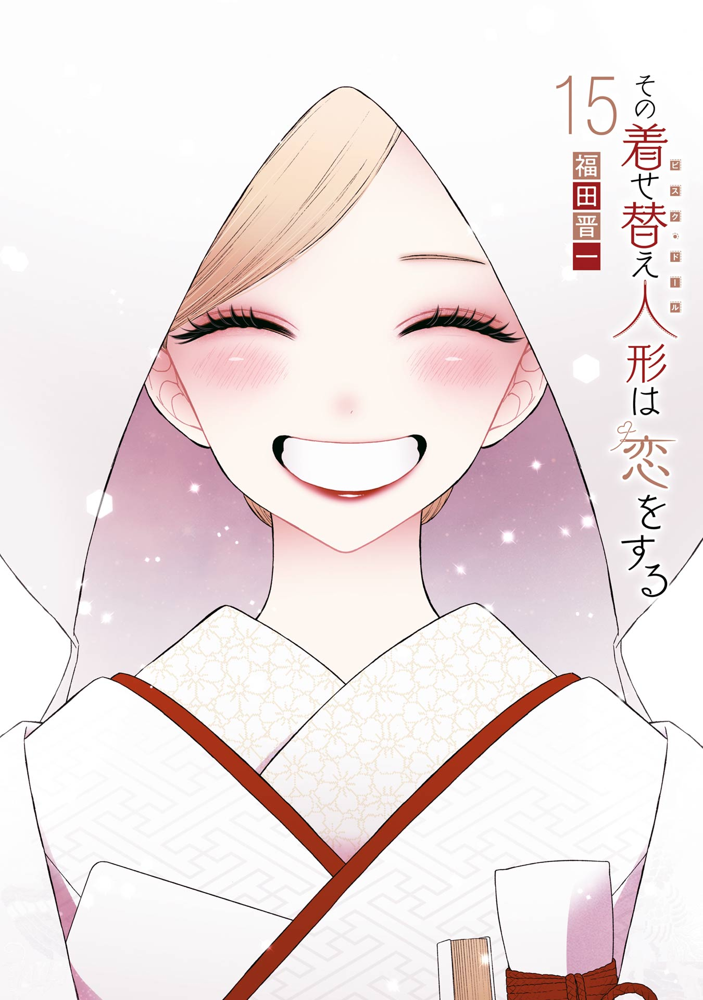
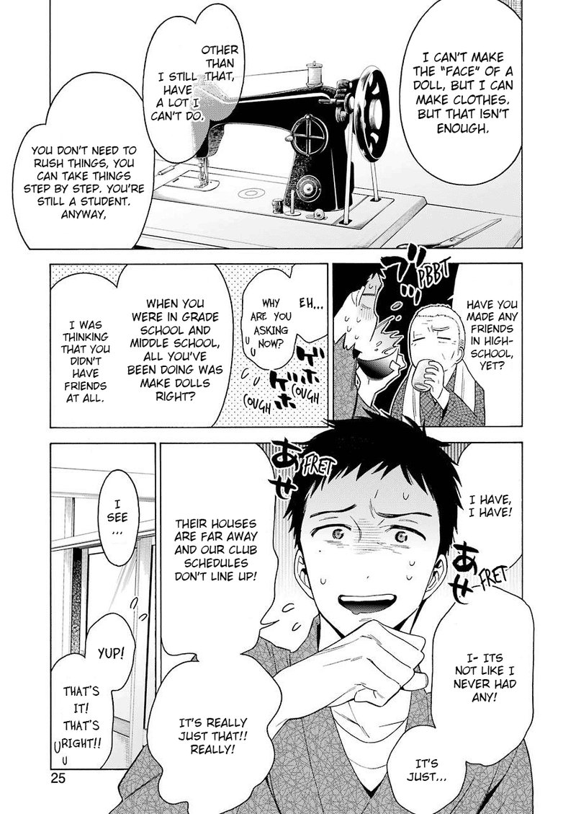

Sono Bisque Doll wa Koi o Suru
by Shinichi Fukuda
Synopsis
Wakana Gojo, a high school student who dreams of becoming a hina doll craftsman, keeps his passion a secret until Marin Kitagawa, a popular classmate who loves cosplay, discovers his sewing skills. Together, they create costumes for Marin's favorite characters, growing closer as they share their passions and discover their feelings for each other.
Chapter 1

Wakana Gojo spends his time practicing the art of making hina dolls, a passion he developed as a child. After being hurt by a childhood friend's reaction to his interest, he keeps his hobby hidden from his classmates.
One day, Marin Kitagawa discovers Wakana's sewing skills and asks him to help create a cosplay costume. Although surprised by her request, Wakana agrees, beginning an unexpected friendship built on creativity, shared interests, and growing affection.
— End of chapter —